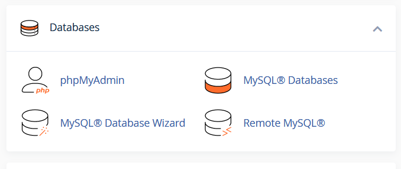
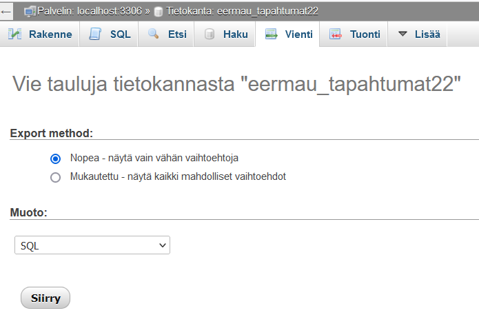
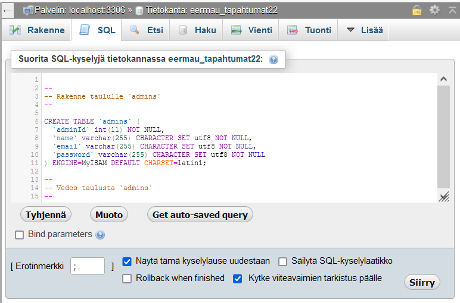
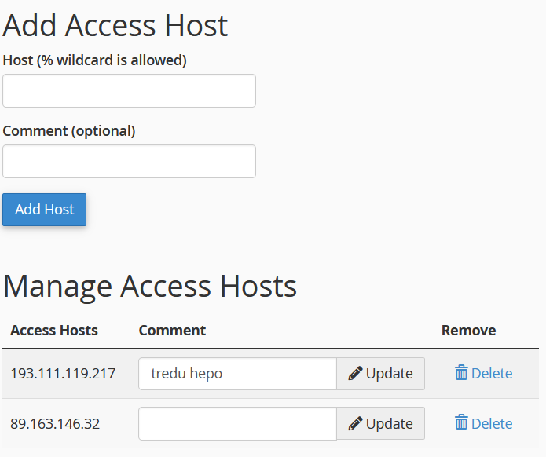

CPanel
Tietokannat
Luo uusi tietokanta kohdassa MySQL Databases

Tee tietokannalle oma käyttäjä, nimeä esimerkiksi samalla nimellä kuin tälle käyttäjälle tarkoitettu tietokanta:

Kun tietokanta on luotu pääset käyttämään sitä valitsemalla Databases / phpMyAdmin. Jos tuot tietoja toisesta lähteestä voit ensin valita Vienti (Export) ja Mukautettu (Custom). Voit valita mitä tauluja haluat mukaan SQL Dump-tiedostoon.

Kun tuot tietokantaasi tietoja valitse Tuonti (Import) tai kopioi SQL-tiedoston sisältämät käskyt suoraan SQL-ikkunaan.

Remote MySQL

Cpanelille tulee sallia ulkoinen yhteys MySQL-tietokantaan
- Valitse Remote MySQL
- Kirjoita oma IP-osoitteesi Host-kohtaan (What is My IP Address?)
- Kirjoita kommentti-kohtaan esim. "koulu"
Tietokantatunnukset
Cpanelin käyttäminen connection.php:ssa
- host: tunnuksesi.treok.io
- db: tekemäsi tietokanta (tunnus_tietokanta)
- user: tekemäsi käyttäjä (tunnus_tietokanta)
- password: generoimasi salasana